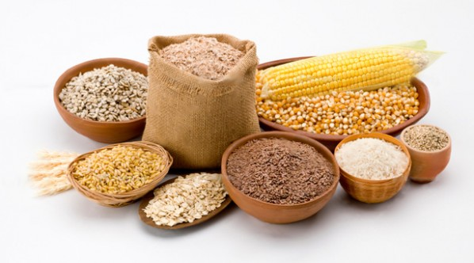

Dicas de Alimentação Saudável
1. Inclua Mais Frutas e Vegetais
Frutas e vegetais são fontes ricas de vitaminas, minerais, antioxidantes e fibras, essenciais para o bom funcionamento do organismo. Eles desempenham um papel fundamental na melhora da digestão, no fortalecimento do sistema imunológico e na prevenção de doenças crônicas como diabetes, hipertensão e alguns tipos de câncer. Adotar uma diversidade de cores nas frutas e vegetais consumidos é uma maneira eficaz de garantir uma ampla gama de nutrientes em sua dieta.

2. Hidrate-se Adequadamente
A hidratação é crucial para o equilíbrio corporal, já que a água está envolvida em processos como digestão, transporte de nutrientes, regulação da temperatura e eliminação de toxinas. Beber pelo menos 8 copos de água por dia é uma recomendação comum, mas a quantidade exata pode variar de acordo com fatores como o nível de atividade física e o clima. Evitar bebidas açucaradas e alcoólicas é importante, pois elas podem causar desidratação e interferir na saúde a longo prazo.

3. Prefira Grãos Integrais
Grãos integrais como arroz integral, aveia, cevada e quinoa são ricos em fibras, vitaminas do complexo B e minerais como magnésio e ferro. Diferente dos grãos refinados, que perdem grande parte de seus nutrientes durante o processamento, os integrais ajudam a estabilizar os níveis de açúcar no sangue e promovem a saciedade por mais tempo. O consumo regular de grãos integrais está associado à redução do risco de doenças cardíacas, diabetes tipo 2 e obesidade.

4. Modere o Consumo de Açúcares e Gorduras
Alimentos ricos em açúcares refinados e gorduras saturadas podem aumentar os níveis de colesterol LDL ("colesterol ruim") e os níveis de glicose no sangue, contribuindo para o desenvolvimento de doenças cardíacas, diabetes tipo 2 e obesidade. Substitua gorduras saturadas por gorduras insaturadas, encontradas em alimentos como abacates, peixes oleosos e azeite de oliva, e opte por adoçantes naturais, como frutas, para reduzir o consumo de açúcares adicionados.
5. Coma em Porções Adequadas
O controle do tamanho das porções é fundamental para manter um peso saudável e evitar o consumo excessivo de calorias. Ouvir os sinais de fome e saciedade do corpo pode prevenir o hábito de comer em excesso. Uma estratégia simples é usar pratos menores para servir as refeições, o que visualmente reduz a chance de exagerar nas quantidades. A prática de porções controladas pode melhorar a digestão e prevenir problemas como obesidade e doenças crônicas.
6. Planeje suas Refeições
O planejamento das refeições é uma ferramenta eficaz para garantir uma alimentação saudável e evitar decisões impulsivas, como optar por alimentos ultraprocessados ou fast food. Um planejamento semanal pode incluir uma lista de compras com ingredientes nutritivos, ajudando a manter refeições equilibradas ao longo da semana. Isso também contribui para economizar tempo e dinheiro, além de reduzir o desperdício de alimentos.
7. Evite Alimentos Ultraprocessados
Alimentos ultraprocessados são frequentemente ricos em açúcares, gorduras não saudáveis, sódio e conservantes. O consumo excessivo desses alimentos, como refrigerantes, salgadinhos e fast food, está relacionado a problemas de saúde como obesidade, doenças cardiovasculares e diabetes. Sempre que possível, opte por alimentos frescos e minimamente processados, que preservam os nutrientes e promovem uma alimentação mais saudável.
8. Pratique Mindful Eating
O mindful eating, ou alimentação consciente, é uma prática que envolve prestar atenção plena à experiência de comer, incluindo os sabores, texturas e sensações do alimento. Ao comer de forma consciente, você pode melhorar sua relação com a comida, evitar excessos e reconhecer os sinais de saciedade do corpo. Essa prática ajuda a controlar a alimentação emocional e pode promover uma atitude mais saudável em relação à comida e ao bem-estar.